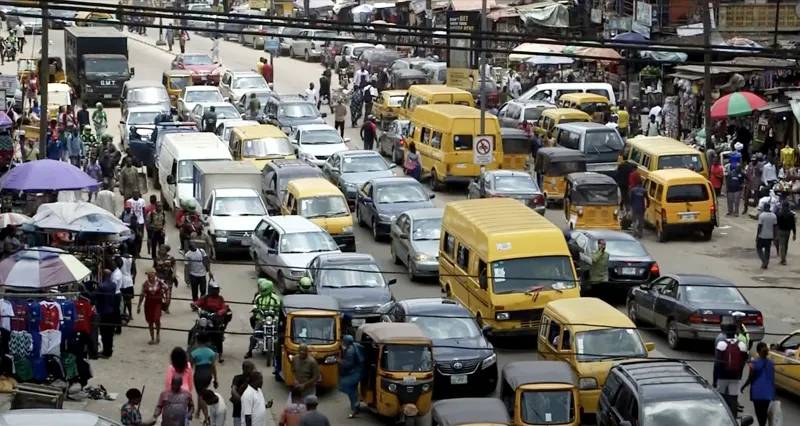

Five ways to move through the city
Port Harcourt runs on a mix of informal and app-based transport. Each option solves a different problem: cheap short hops, fixed long routes, privacy, speed on water, or safety at night. Use the filter below to narrow the list to what matters to you right now.
On the street

At peak hours the roads fill with every mode at once. Knowing which one to flag down — and where it will actually stop — is half the challenge. The other half is timing. Leave before 7am or between 10am and 4pm and you will move noticeably faster.
What to keep in mind
- Agree the fare before you board. For keke and taxis the price is negotiated, not fixed.
- Carry small notes and coins. Drivers rarely have change for large naira notes.
- Rain changes everything. Fares rise and traffic slows during heavy rain; plan extra time between April and October.
- Share your trip. When using ride-hailing apps or late-night transport, send your trip details to someone you trust.